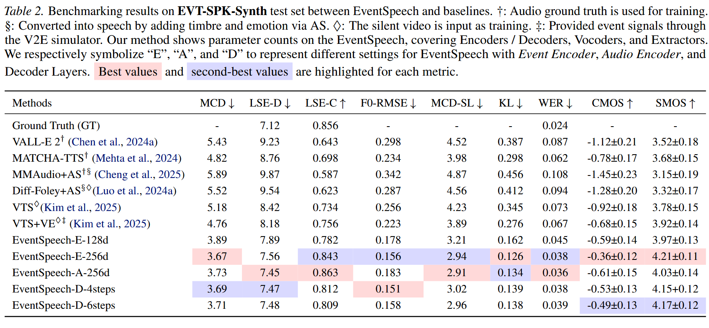
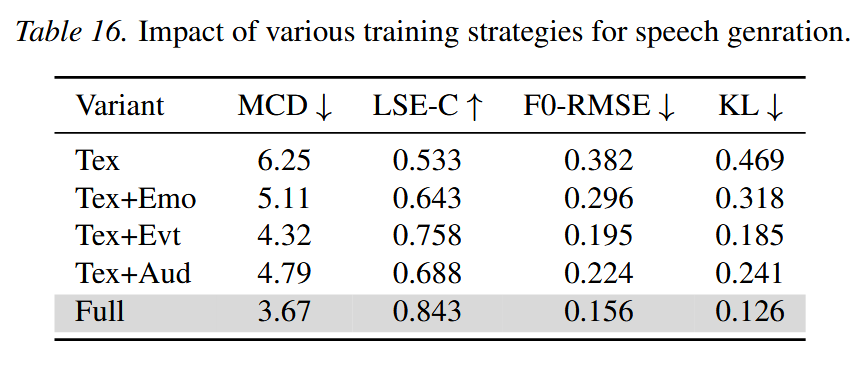

<!-- 替换原有轮播相关CSS -->
<style>
    /* 轮播图优化：更精致的学术风格 + 强制垂直居中 */
    .carousel-container { 
        position: relative; 
        overflow: hidden !important;
        margin: 0 auto;    
        border-radius: 1rem; /* 更圆润的边角 */
        padding: 0 !important;
        /* 关键：固定容器高度，同时让内部内容垂直居中 */
        min-height: 500px; /* 可根据需要调整容器高度 */
        width: 100%;
        background-color: var(--color-card);
        box-shadow: 0 6px 16px rgba(0,0,0,0.06); /* 更柔和的阴影 */
        display: flex;
        align-items: center; /* 容器自身作为flex，让内部轮播项垂直居中 */
    }
    .carousel-slides { 
        display: flex; 
        transition: transform 0.6s ease-in-out; 
        width: 100%;
        /* 继承容器高度，保证轮播项能垂直居中 */
        height: 100%;
    }
    .carousel-slide { 
        min-width: 100% !important;
        box-sizing: border-box;
        padding: 2rem !important; /* 加大内边距更透气 */
        /* 关键：轮播项强制垂直居中 */
        display: flex;
        align-items: center;
        justify-content: center;
        height: 100%; /* 填满父容器高度 */
    }
    .carousel-slide img {
        /* 关键：图片自适应容器，同时保持比例 */
        max-width: 100%;
        max-height: 100%;
        object-fit: contain; /* 完整显示图片，不裁剪 */
        display: block;
        border-radius: 0.75rem;
        box-shadow: 0 3px 10px rgba(0,0,0,0.08); /* 优化阴影 */
    }
    /* Table轮播图适配（覆盖原有样式） */
    #tableSlides .carousel-slide img {
        max-height: 100%; /* 取消原有固定高度，让图片自适应容器 */
        margin: 0 !important; /* 取消原有margin，由flex居中控制 */
    }

    /* 轮播按钮：清新自然的风格（保留原有） */
    .carousel-btn {
        position: absolute !important;
        top: 50%;
        transform: translateY(-50%);
        background: rgba(255,255,255,0.95);
        color: var(--color-accent);
        border: 1px solid var(--color-btn-border);
        border-radius: 50%;
        width: 48px; /* 加大按钮更易点击 */
        height: 48px;
        display: flex;
        align-items: center;
        justify-content: center;
        cursor: pointer;
        z-index: 999 !important;
        transition: all 0.3s ease;
        box-shadow: 0 3px 8px rgba(49, 151, 149, 0.15);
        padding: 0; /* 清除按钮内边距 */
    }
    .carousel-btn-left { left: 20px !important; }
    .carousel-btn-right { right: 20px !important; }
    .carousel-btn:hover {
        background: var(--color-accent);
        color: white;
        border-color: var(--color-accent);
        transform: translateY(-50%) scale(1.05); /* 轻微放大 */
    }
    /* 修复按钮图标垂直居中 */
    .carousel-btn i {
        font-size: 1.1rem;
        line-height: 1;
    }

    /* 轮播圆点指示器样式（保留原有） */
    .carousel-dots {
        position: absolute;
        bottom: 20px;
        left: 50%;
        transform: translateX(-50%);
        display: flex;
        gap: 10px;
        z-index: 998;
    }
    .carousel-dot {
        width: 12px;
        height: 12px;
        border-radius: 50%;
        background-color: rgba(49, 151, 149, 0.3); /* 淡青色 */
        cursor: pointer;
        transition: all 0.3s ease;
        border: 1px solid transparent;
    }
    .carousel-dot.active {
        background-color: var(--color-accent); /* 主色填充 */
        transform: scale(1.2); /* 选中状态放大 */
        border-color: rgba(255, 255, 255, 0.8); /* 白色边框 */
    }
    .carousel-dot:hover {
        background-color: rgba(49, 151, 149, 0.6); /* hover加深 */
    }
</style>


<!-- 轮播容器部分保持原有结构，无需修改 -->
<!-- 7. Figure 轮播 -->
<section class="mb-12">
    <div class="content-container">
        <h2 class="text-2xl font-bold mb-4 text-gray-900 section-title">Qualitative Results</h2>
        <div id="figureCarousel" class="carousel-container">
            <button class="carousel-btn carousel-btn-left" onclick="moveSlide(-1)">
                <<i class="fa-solid fa-chevron-left"></</i>
            </button>
            <div class="carousel-slides" id="figureSlides">
                <div class="carousel-slide">
                    
                </div>
                <div class="carousel-slide">
                    
                </div>
                <div class="carousel-slide">
                    
                </div>
                <div class="carousel-slide">
                    
                </div>
            </div>
            <button class="carousel-btn carousel-btn-right" onclick="moveSlide(1)">
                <<i class="fa-solid fa-chevron-right"></</i>
            </button>
            <div id="figureDots" class="carousel-dots"></div>
        </div>
    </div>
</section>

<!-- 8. Table 轮播 -->
<section class="mb-12">
    <div class="content-container">
        <h2 class="text-2xl font-bold mb-4 text-gray-900 section-title">Quantitative Results</h2>
        <div id="tableCarousel" class="carousel-container">
            <button class="carousel-btn carousel-btn-left" onclick="moveTableSlide(-1)">
                <<i class="fa-solid fa-chevron-left"></</i>
            </button>
            <div class="carousel-slides" id="tableSlides">
                <div class="carousel-slide">
                    
                </div>
                <div class="carousel-slide">
                    
                </div>
                <div class="carousel-slide">
                    
                </div>
                <div class="carousel-slide">
                    
                </div>
                <div class="carousel-slide">
                    
                </div>
                <div class="carousel-slide">
                    
                </div>
                <div class="carousel-slide">
                    
                </div>
                <div class="carousel-slide">
                    
                </div>
            </div>
            <button class="carousel-btn carousel-btn-right" onclick="moveTableSlide(1)">
                <<i class="fa-solid fa-chevron-right"></</i>
            </button>
            <div id="tableDots" class="carousel-dots"></div>
        </div>
    </div>
</section>
